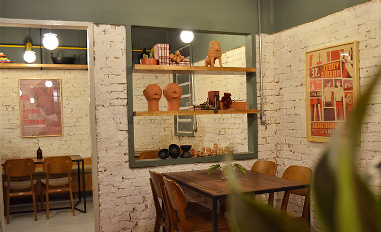

Restaurante São Pedro
O São Pedro Restaurante traz um feliz movimento de 'reocupação' do Centro do Recife, mais precisamente daquele Pátio histórico e emblemático. O São Pedro traz um respiro com frescor de mar, sob o comando do chef Thiago das Chagas

Cajá Restaurante
A gastronomia de especialidades regionais repaginadas à moda da casa, em espaço convidativo com rusticidade e elegância. Casa comandada pelo chef Yuri Machado

Tio Pepe
Uma opção de restaurante tradicional com pratos premiados, ambientes aconchegante, com música leve, o Tio Pepe é uma ótima pedida.

Restaurante Leite
Restaurante tradicional do século 19 com carnes, mariscos e massas da culinária europeia, música clássica e ambiente agradável.

Buca Trattoria
Restaurante italiano refinado e intimista de ambiente sereno serve carnes, massas artesanais e frutos do mar.